승강기기사 (2021-05-15 기출문제)
1과목: 승강기 개론
1. 매다는 장치 중 체인에 의해 구동되는 엘리베이터의 경우 그 장치의 안전율이 최소 얼마 이상이어야 하는가?
- 7
- 8
- 9
- 10
(정답률: 79%)

2. 로프 마모 및 파손상태 검사의 합격기준으로 옳은 것은?
- 소선에 녹이 심한 경우: 1구성 꼬임(스트랜드)의 1꼬임 피치 내에서 파단수 3이하여야 한다.
- 소선의 파단이 균등하게 분포되어 있는 경우: 1구성 꼬임(스트랜드)의 1꼬임 피치내에서 파단 수 5이하여야 한다.
- 소선의 파단이 1개소 또는 특정의 꼬임에 집중되어 있는 경우: 소선의 파단총수가 1꼬임 피치 내에서 6꼬임 와이어로프이면 15이하여야 한다.
- 파단 소선의 단면적이 원래의 소선 단면적의 70%이하로 되어 있는 경우: 1구성 꼬임(스트랜드)의 1꼬임 피치 내에서 파단 수 2 이하여야 한다.
(정답률: 79%)
3. 엘리베이터 안전기준상 과속조절기의 일반사항 및 로프 구비조건에 대한 설명으로 틀린 것은?
- 과속조절기 로프의 최소 파단하중은 10이상의 안전율을 확보해야 한다.
- 과속조절기에는 추락방지안전장치의 작동과 일치하는 회전방향이 표시되어야 한다.
- 과속조절기 로프 인장 풀리의 피치 직경과 과속조절기 로프의 공칭 지름의 비는 30이상이어야 한다.
- 과속조절기가 작동될 때, 과속조절기에 의해 발생되는 과속조절기 로프의 인장력은 추락방지안전장치가 작동하는 데 필요한 힘의 2배 또는 300N 중 큰 값 이상이어야 한다.
(정답률: 65%)
4. 에스컬레이터의 경사도는 일반적으로 몇°를 초과하지 않아야 하는가? (단, 층고가 6m 초과인 경우로 한정한다.)
- 20°
- 30°
- 40°
- 50°
(정답률: 82%)
5. 소방구조용 엘리베이터는 일반적으로 소방관 접근 지정층에서 소방관이 조작하여 엘리베이터 문이 닫힌 이후부터 최대 몇 초 이내에 가장 먼 층에 도착되어야 하는가? (단, 승강행정이 200m 이상 운행될 경우는 제외한다.)
- 10
- 20
- 30
- 60
(정답률: 87%)
6. 일반적으로 기계실이 있는 엘리베이터에서 기계실에 설치되는 부품은?
- 완충기
- 균형추
- 과속조절기
- 리밋 스위치
(정답률: 80%)
7. 권상 도르래ㆍ풀리 또는 드럼의 피치직경과 로프의 공칭 직경 사이의 비율은 로프의 가닥수와 관계없이 최소 몇 이상이어야 하는가? (단, 주택용 엘리베이터는 제외한다.)
- 10
- 20
- 30
- 40
(정답률: 79%)
8. 즉시 작동형 추락방지안전장치가 작동할 때 정지력과 거리에 대한 그래프로 옳은 것은?
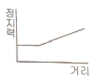
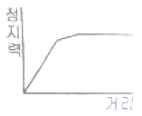
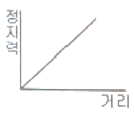
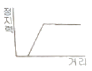
(정답률: 78%)
9. 다음 중 주택용 엘리베이터의 정원을 일반적으로 산출하는 식으로 옳은 것은?
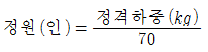
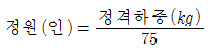
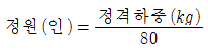
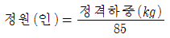
(정답률: 78%)
10. 와이어로프를 소선강도에 따라 분류했을 때 다음 설명 중 옳은 것은?
- E종은 1470N/mm2급 강도의 소선으로 구성된 로프이다.
- B종은 강도와 경도가 A종보다 낮아서 정격하중이 작은 엘리베이터에 주로 사용된다.
- G종은 소선의 표면에 도금한 것으로 습기가 많은 장소에 사용하기에 적합하다.
- A종은 다른 종류와 비교하여 탄소량을 적게하고 경도를 낮춘 것으로 소선강도가 1320N/mm2급이다.
(정답률: 80%)
11. 미리 설정한 방향으로 설정치를 초과한 상태로 과도하게 유체 흐름이 증가하여 밸브를 통과하는 압력이 떨어지는 경우 자동으로 차단하도록 설계된 밸브는?
- 체크 밸브
- 럽처 밸브
- 차단 밸브
- 릴리프 밸브
(정답률: 62%)
12. 엘리베이터의 수평 개폐식 문 중 자동 동력 작동식 문에 대한 안전 기준으로 틀린 것은?
- 문이 닫히는 것을 막는데 필요한 힘은 문이 닫히기 시작하는 1/3구간을 제외하고 150N을 초과하지 않아야 한다.
- 접이식 문이 열리는 것을 막는데 필요한 힘은 150N을 초과하지 않아야 한다.
- 승강장문 또는 카문과 문에 견고하게 연결된 기계적인 부품들의 운동에너지는 평균 닫힘 속도로 계산되거나 측정했을 때 100J 이하이어야 한다.
- 접이식 카문이 닫힐 때 문틀 홈 안으로 들어가는 경우, 접힌 문의 외측 모서리와 문틀 홈 사이의 거리는 15mm이상이어야 한다.
(정답률: 59%)
13. 승강기의 안전검사 중 정기검사의 경우 기본적으로 검사 주기는 몇 년 이내여야 하는가?
- 1년
- 2년
- 3년
- 4년
(정답률: 69%)
14. 일반적으로 무빙워크의 경사도는 최대 몇 도 이하이어야 하는가?
- 9°
- 12°
- 15°
- 25°
(정답률: 80%)
15. 엘리베이터의 브레이크 시스템에 대한 설명으로 틀린 것은? (단, gn는 중력가속도이다.)
- 브레이크로 감속하는 카의 감속도는 일반적으로 1.0gn 이상으로 설정한다.
- 주동력 전원공급, 제어회로에 전원공급이 차단될 경우 브레이크 시스템이 자동으로 작동해야 한다.
- 브레이크 작동과 관련된 부품은 권상도르래, 드럼 또는 스프로킷에 직접적이고 확실한 장치에 의해 연결되어야 한다.
- 전자-기계 브레이크는 자체적으로 카가 정격속도로 정격하중의 125%를 싣고 하강방향으로 운행될 때 구동기를 정지시킬 수 있어야 한다.
(정답률: 76%)
16. 비선형 특성을 갖는 에너지 축적형 완충기에서 규정된 시험 방법에 따라 완충기에 충돌할 때 만족해야 하는 기준으로 틀린 것은? (단, gn은 중력가속도를 나타낸다.)
- 최대 피크 감속도는 8gn 이하이어야 한다.
- 작동 후에는 영구적인 변형이 없어야 한다.
- 2.5gn를 초과하는 감속도는 0.04초 보다 길지 않아야 한다.
- 카 또는 균형추의 복귀속도는 1m/s이하이어야 한다.
(정답률: 74%)
17. 다음 괄호 안의 내용으로 옳은 것은?
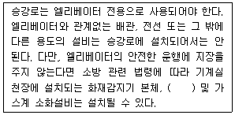
- 비상용 스피커
- 비상용 소화기
- 비상용 전화기
- 비상용 경보기
(정답률: 73%)
18. 주행안내 레일의 규격을 결정하기 위하여 고려사항으로 거리가 가장 먼 것은?
- 지진 발생 시 전달되는 수평 진동력
- 추락방지안전장치의 작동에 따른 좌굴하중
- 불균형한 큰 하중 적재에 따른 회전 모멘트
- 카의 급강하시 작동하는 완충기의 행정거리
(정답률: 70%)
19. 기계식 주차장치에서 여러층으로 배치되어 있는 고정된 주차구획에 아래ㆍ위 및 옆으로 이동할 수 있는 운반기에의하여 자동차를 자동으로 운반이동하여 주차하도록 설계한 주차장치 형식은?
- 2단 순환식
- 평면 왕복식
- 수직 순환식
- 승강기 슬라이드식
(정답률: 71%)
20. 유압식 엘리베이터에 사용되는 체크밸브의 역할은?
- 오일이 역류하는 것을 방지한다.
- 오일에 있는 이물질을 걸러낸다.
- 오일을 오직 하강 방향으로만 흐르도록 한다.
- 오일의 최대 압력을 일정 압력 이하로 관리한다.
(정답률: 71%)
2과목: 승강기 설계
21. 엘리베이터의 자동 동력 작동식 문에서 문이 닫히는 중에 사람이 출입구를 통과하는 경우 자동으로 문이 열리는 장치가 있어야 한다. 이 장치의 요건에 관한 설명으로 옳지 않은 것은?
- 이 장치는 문이 닫히는 마지막 20mm구간에서는 무효화 될 수 있다.
- 이 장치는 카문 문턱 위로 최소 25mm, 최대 1600mm 사이의 전구간에서 감지될 수 있어야 한다.
- 이 장치는 물체가 계속 감지되는 한 무효화 되어서는 안된다.
- 이 장치가 고장난 경우 엘리베이터를 운행하려면, 문이 닫힐 때마다 음향신호장치가 작동되어야 하고, 문의 운동에너지는 4J 이하이어야 한다.
(정답률: 55%)
22. 승강장문 및 카문이 닫혀 있을 때 문짝 간 틈새나 문짝과 문틀(측면) 또는 문턱 사이의 틈새는 최대 몇 mm 이하이어야 하는가? (단, 수직 개폐식 승강장문과 관련 부품이 마모된 경우 및 유리로 만든 문은 제외한다.)
- 6
- 8
- 10
- 12
(정답률: 55%)
23. 직접식 유압엘리베이터의 하부 프레임에 걸리는 최대굽힘 모멘트가 2400Nㆍm일 때 프레임의 안전율은 약 얼마인가? (단, 프레임의 단면계수는 68cm3, 허용굽힘응력은 410MPa이다.)
- 4.9
- 6.8
- 9.4
- 11.6
(정답률: 55%)
24. 엘리베이터 파이널 리미트 스위치의 설치 및 작동 기준에 대한 설명으로 틀린 것은?
- 유압식 엘리베이터의 경우, 주행로의 최상부에서만 작동하도록 설치되어야 한다.
- 권상 및 포지티브 구동식 엘리베이터의 경우, 주행로의 최상부 및 최하부에서 작동하도록 설치되어야 한다.
- 파이널 리미트 스위치와 일반 종단정지창치는 서로 연결되어 종속적으로 작동되어야 한다.
- 파이널 리미트 스위치의 작동은 완충기가 압축되어 있거나, 램이 완충장치에 접촉되어 있는 동안 지속적으로 유지되어야 한다.
(정답률: 68%)
25. 엘리베이터 주행안내 레일의 기준에 대한 설명으로 틀린 것은?
- 주행안내 레일은 압연강으로 만들어지거나 마찰 면이 기계 가동되어야 한다.
- 카, 균형추 또는 평행추는 2개 이상의 견고한 금속제 주행안내 레일에 의해 각각 안내되어야 한다.
- 추락방지안전장치가 없는 균형추 또는 평형추의 주행안내 레일은 금속판을 성형하여 만들어서는 안된다.
- 주행안내 레일의 브래킷 및 건축물에 고정하는 것은 정상적인 건축물의 침하 또는 콘크리트의 수축으로 인한 영향을 자동으로 또는 단순 조정에 의해 보상할 수 있어야 한다.
(정답률: 66%)
26. 전동기의 특성을 나타내는 항목 중 GD2에 대한 설명으로 옳은 것은?
- 주어진 전압의 파형이 전류보다 앞서는 정도를 나타내는 것이다.
- 일정한 토크로 전동기를 기동시켰을 때 빨리 기동하는가 또는 늦게 기동하는가의 정도를 나타내는 것이다.
- 전동기의 출력이 회전수에 비례하여 변화하는 정도를 나타내는 것이다.
- 교류에 있어서 전압과 전류 파장의 격차 정도를 나타내는 것이다.
(정답률: 52%)
27. 가변전압 가변주파수 제어방식의 PWM에 관한 설명으로 틀린 것은?
- 펄스 폭 변조라는 의미이다.
- 입력측의 교류전압을 변화시킨다.
- 전동기의 효율이 좋다.
- 전동기의 토크 특성이 좋아 경제적이다.
(정답률: 62%)
28. 유압 엘리베이터 기계실의 조건이 다음과 같을 때 수냉식 열교환기의 환기량은 약 몇 m3/h인가?
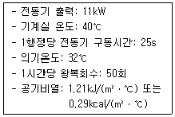
- 1260
- 1320
- 1360
- 1420
(정답률: 33%)
29. 일주시간(RTT)이 120초이고, 승객수가 12명일 경우 엘리베이터의 5분간 수송능력은 약 몇 명인가?
- 30명
- 24명
- 20명
- 12명
(정답률: 68%)
30. 다음 중 기어의 이(teeth) 줄이 나선인 원통형 기어로서 기어의 두 축이 서로 평행한 기어는?
- 스퍼 기어
- 웜 기어
- 베벨 기어
- 헬리컬 기어
(정답률: 55%)
31. 포지티브 구동 엘리베이터의 로프 감김에 대한 설명으로 틀린 것은?
- 로프는 드럼에 두 겹으로만 감겨야 된다.
- 드럼은 나선형으로 홈이 있어야 하고, 그 홈은 사용되는 로프에 적합해야 한다.
- 홈에 대한 로프의 편향각(후미각)은 4°를 초과하지 않아야 한다.
- 카가 완전히 압축된 완충기 위에 정지하고 있을 때, 드럼의 홈에는 한바퀴 반의 로프가 남아 있어야 한다.
(정답률: 66%)
32. 건물 내에 승강기를 분산배치 하지 않고, 집중배치 할 경우 발생할 수 있는 현상이 아닌 것은?
- 운전능률 향상
- 설비 투자비용 절감
- 승객의 대기시간 단축
- 승객의 망설임현상 발생
(정답률: 73%)
33. 에스컬레이터 공칭속도가 0.5m/s인 경우 무부하 하강 시 에스컬레이터 정지거리의 범위로 옳은 것은?
- 0.10m부터 1.00m까지
- 0.10m부터 1.50m까지
- 0.20m부터 1.00m까지
- 0.20m부터 1.50m까지
(정답률: 69%)
34. 엘리베이터의 매다는 장치(현수)에 관한 기준으로 틀린 것은?
- 로프 또는 체인 등의 가닥수는 2가닥이상이어야 한다.
- 공칭 직경이 8mm 이상이고, 3가닥 이상의 로프에 의해 구동되는 권상 구동 엘리베이터의 경우 안전율이 12 이상이어야 한다.
- 3가닥 이상의 6mm이상 8mm 미만의 로프에 의해 구동되는 권상 구동 엘리베이터의 경우 안전율이 14 이상이어야 한다.
- 매다는 장치 끝부분은 자체 조임 쐐기 형 소켓, 압착링 매듭법, 주물 단말처리에 의한 카, 균형추/평형추 또는 구멍에 꿰어 맨 매다는 장치 마감 부분의 지지대에 고정되어야 한다.
(정답률: 64%)
35. 승강기용 3상 유도전동기의 역률 산출 공식은?
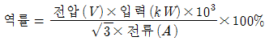
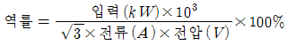
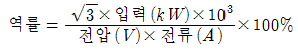
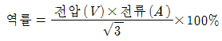
(정답률: 66%)
36. 일반적으로 구름 베어링에 비교한 미끄럼 베어링의 장점은?
- 윤활유가 적게 필요하다.
- 초기 작동 시 마찰이 작다.
- 표준화, 규격화가 되어 있어 호환성이 좋다.
- 진동이 있는 기계류에 사용 시 효과가 좋다.
(정답률: 51%)
37. 일반적으로 엘리베이터 권상 도르래의 지름을 주로프 지름의 40배 이상으로 규정하는 이유로 가장 적절한 것은?
- 로프의 이탈을 방지하기 위하여
- 로프의 수명을 연장하기 위하여
- 도르래의 수명을 연장하기 위하여
- 도르래와 로프의 미끄러짐을 방지하기 위하여
(정답률: 58%)
38. 엘리베이터용 전동기와 범용 전동기를 비교할 때 엘리베이터용 전동기에 요구되는 특성이 아닌 것은?
- 기동토크가 클 것
- 기동전류가 적을 것
- 회전부분의 관성 모멘트가 클 것
- 기동횟수가 많으므로 열적으로 견딜 것
(정답률: 71%)
39. 권상 도르래의 로프 홈에서 재질과 권부각이 동일할 경우 트랙선 능력의 크기 순서를 올바르게 나타낸 것은?
- U홈 ＜ 언더컷홈 ＜ V홈
- 언더컷홈 ＜ U홈 ＜ V홈
- V홈 ＜ U홈 ＜ 언더컷홈
- U홈 ＜ V홈 ＜ 언더컷홈
(정답률: 75%)
40. 수평 개폐식 중 중앙 개폐식 문에서 선행 문짝을 열리는 방향으로 가장 취약한 지점에 장비를 사용하지 않고 손으로 150N의 힘을 가할 때, 문의 틈새는 최대 몇 mm를 초과해서는 안 되는가?
- 30
- 35
- 40
- 45
(정답률: 33%)
3과목: 일반기계공학
41. 다음 중 각도 측정기는?
- 사인바
- 마이크로미터
- 하이트게이지
- 버니어캘리퍼스
(정답률: 73%)
42. 축 설계에 있어서 고려할 사항이 아닌 것은?
- 강도
- 응력집중
- 열응력
- 전기 전도성
(정답률: 71%)
43. 전위기어에 대한 설명으로 틀린 것은?
- 이의 강도를 개선한다.
- 이의 언더컷을 막는다.
- 중심거리를 조절할 수 있다.
- 기준 래크의 기준 피치선이 기어의 기준 피치원에 접하는 기어이다.
(정답률: 42%)
44. 펌프나 관로에서 숨을 쉬는 것과 비슷한 진동과 소음이 발생하는 현상으로 송출압력과 유량사이에 주기적인 변화가 발생하는 것은?
- 서징
- 채터링
- 베이퍼 록
- 캐비테이션
(정답률: 60%)
45. 왕복 펌프의 과잉 배수(송출) 체적비에 대한 설명으로 옳은 것은?
- 배수고선의 산수가 많으면 많을수록 과잉 배수 체적비의 값은 크다.
- 과잉 배수 체적비가 크다는 것은 유량의 맥동이 작다는 것을 의미한다.
- 평균 배수량을 넘어서 배수되는 양과 행정용적과의 곱으로 정의한다.
- 배수량 변동의 정도를 나타내는 척도이다.
(정답률: 44%)
46. 합금원소 중 구리(Cu)가 탄소강의 성질에 미치는 영향으로 틀린 것은?
- 내식성을 향상시킨다.
- A1변태점을 저하시킨다.
- 결정입자를 조대화시킨다.
- 인장강도, 경도, 탄성한도 등을 증가시킨다.
(정답률: 47%)
47. 주물에 사용되는 주물사의 구비조건으로 틀린 것은?
- 내화성이 클 것
- 통기성이 좋을 것
- 열전도성이 높을 것
- 주물표면에서 이탈이 용이할 것
(정답률: 55%)
48. 새들 키라고도 하며, 축에 키 홈 가공을 하지 않고 보스에만 키 홈을 가공한 것은?
- 묻힘 키
- 반달 키
- 안장 키
- 접선 키
(정답률: 69%)
49. 인장강도가 200N/m2인 연강봉을 안전하게 사용하기 위한 최대허용응력(Pa)은? (단, 봉의 안전율은 4로 한다.)
- 20
- 50
- 100
- 200
(정답률: 72%)
50. 길이 4m인 단순보의 중앙에 1000N의 집중하중이 작용할 때, 최대 굽힘 모멘트(Nㆍm)는?
- 250
- 500
- 750
- 1000
(정답률: 42%)
51. 연강봉의 단면적이 40mm2, 온도변화가 20℃일 때, 20kN의 힘이 필요하다면, 선팽창계수는 약 얼마인가? (단, 재료의 세로탄성계수는 210GPa이다.)
- 0.83×10-5
- 1.19×10-4
- 1.51×10-5
- 1.9×10-4
(정답률: 47%)
52. 나사의 종류 중 정밀기계 이송나사에 사용되는 것은?
- 4각나사
- 볼나사
- 너클나사
- 미터가는나사
(정답률: 61%)
53. 드릴로 뚫은 구멍의 내면을 매끈하고 정밀하게 가공하는 것은?
- 줄 가공
- 탭 가공
- 리머 가공
- 다이스 가공
(정답률: 63%)
54. 중실축에서 동일한 비틀림 모멘트를 작용시킬 때 지름이 2d에서 저장되는 탄성에너지가 E2, 지름이 d에서 저장되는 탄성에너지가 E1일 때, E1과 E2의 관계로 옳은 것은? (단, 지름 외의 조건은 동일하다.)
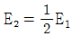
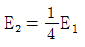
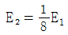
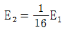
(정답률: 50%)
55. 서브머지드 아크 용접에 대한 설명으로 옳은 것은?
- 아크가 보이지 않는 상태에서 용접이 진행
- 불활성 가스 대신에 탄산가스를 이용한 용극식 방식
- 텅스텐, 몰리브덴과 같은 대기에서 반응하기 쉬운 금속도 용접 가능
- 아크열에 의한 순간적인 국부 가열이므로 용접 응력이 대단히 작음
(정답률: 48%)
56. 6ㆍ4 황동에 Sn을 1%정도 첨가한 합금으로 선박 기계용, 스프링용, 용접용 재료 등에 많이 사용되는 특수 황동은?
- 쾌삭 황동
- 네이벌 황동
- 고강도 황동
- 알루미늄 황동
(정답률: 59%)
57. 두 축이 평행하고 축의 중심선이 약간 어긋났을 때 가속도의 변동 없이 토크를 전달하는데 사용하는 축 이음은?
- 올덤 커플링
- 머프 커플링
- 유니버설 조인트
- 플렉시블 커플링
(정답률: 50%)
58. 코일 스프링의 처짐량에 관한 설명으로 옳은 것은?
- 코일 스프링 권수에 반비례한다.
- 코일 스프링의 전단탄성계수에 반비례한다.
- 코일 스플링에 작용하는 하중의 제곱에 비례한다.
- 코일 스프링 소선 지름의 제곱에 비례한다.
(정답률: 53%)
59. 비절삭 가공에 해당하는 것은?
- 주조
- 호닝
- 밀링
- 보링
(정답률: 66%)
60. 유압 펌프 중 용적형 펌프가 아닌 것은?
- 기어 펌프
- 베인 펌프
- 터빈 펌프
- 피스톤 펌프
(정답률: 51%)
4과목: 전기제어공학
61. 다음 블록선도를 등가 합성 전달함수로 나타낸 것은?
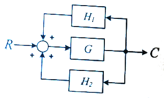
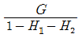
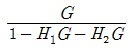
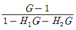
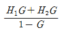
(정답률: 67%)
62. R1=100Ω, R2=1000Ω, R3=800Ω일 때 전류계의 지시가 0이 되었다. 이때 저항 R4는 몇 Ω인가?
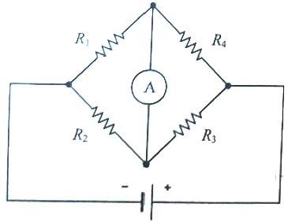
- 80
- 160
- 240
- 320
(정답률: 64%)
63. 저항에 전류가 흐르면 줄열이 발생하는데 저항에 흐르는 전류 I와 전력 P의 관계는?
- I∝P
- I∝P0.5
- I∝P1.5
- I∝P2
(정답률: 51%)
64. 입력신호 중 어느 하나가 “1”일 때 출력이 “0”이 되는 회로는?
- AND 회로
- OR 회로
- NOT 회로
- NOR 회로
(정답률: 49%)
65. 전류계와 전압계는 내부저항이 존재한다. 이 내부저항은 전압 또는 전류를 측정하고자 하는 부하의 저항에 비하여 어떤 특성을 가져야 하는가?
- 내부저항이 전류계는 가능한 커야 하며, 전압계는 가능한 작아야 한다.
- 내부저항이 전류계는 가능한 커야 하며, 전압계도 가능한 커야 한다.
- 내부저항이 전류계는 가능한 작아야 하며, 전압계는 가능한 커야 한다.
- 내부저항이 전류계는 가능한 작아야 하며, 전압계도 가능한 작아야 한다.
(정답률: 57%)
66. 지상 역률 80%, 1000kW의 3상 부하가 있다. 이것에 콘덴서를 설치하여 역률을 95%로 개선하려고 한다. 필요한 콘덴서의 용량(kvar)은 약 얼마인가?
- 421.3
- 633.3
- 844.3
- 1266.3
(정답률: 29%)
67. 전동기의 회전방향을 알기 위한 법칙은?
- 렌츠의 법칙
- 암페어의 법칙
- 플레밍의 왼손법칙
- 플레밍의 오른손법칙
(정답률: 69%)
68. 100V용 전구 30W와 60W 두 개를 직렬로 연결하고 직류 100V 전원에 접속하였을 때 두 전구의 상태로 옳은 것은?
- 30W 전구가 더 밝다.
- 60W 전구가 더 밝다.
- 두 전구의 밝기가 모두 같다.
- 두 전구가 모두 켜지지 않는다.
(정답률: 67%)
69. 다음 조건을 만족시키지 못하는 회로는?
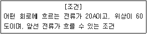
- RL병렬
- RC병렬
- RLC병렬
- RLC직렬
(정답률: 52%)
70. 콘덴서의 전위차와 축적되는 에너지와의 관계식을 그림으로 나타내면 어떤 그림이 되는가?
- 직선
- 타원
- 쌍곡선
- 포물선
(정답률: 63%)
71. 제어량에 따른 분류 중 프로세스 제어에 속하지 않는 것은?
- 압력
- 유량
- 온도
- 속도
(정답률: 56%)
72. 열전대에 대한 설명이 아닌 것은?
- 열전대를 구성하는 소선은 열기전력이 커야한다.
- 철, 콘스탄탄 등의 금속을 이용한다.
- 제벡효과를 이용한다.
- 열팽창 계수에 따른 변형 또는 내부 응력을 이용한다.
(정답률: 35%)
73. 피드백제어에서 제어요소에 대한 설명 중 옳은 것은?
- 조작부와 검출부로 구성되어 있다.
- 동작신호를 조작량으로 변화시키는 요소이다.
- 제어를 받는 출력량으로 제어대상에 속하는 요소이다.
- 제어량을 주궤환 신호로 변화시키는 요소이다.
(정답률: 44%)
74. 워드 레오나드 속도 제어 방식이 속하는 제어 방법은?
- 저항제어
- 계자제어
- 전압제어
- 직병렬제어
(정답률: 34%)
75. 3상 유도전동기의 주파수가 60Hz, 극수가 6극, 전부하 시 회전수가 1160rpm이라면 슬립은 약 얼마인가?
- 0.03
- 0.24
- 0.45
- 0.57
(정답률: 51%)
76. 다음 논리기호의 논리식은?
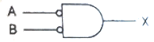
- X=A+B
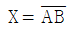
- X=AB
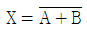
(정답률: 37%)
77. x2=ax1+cx3+bx4의 신호흐름 선도는?
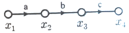
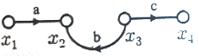
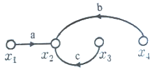
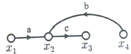
(정답률: 60%)
78. 입력신호 x(t)와 출력신호 y(t)의 관계가
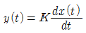
로 표현되는 것은 어떤 요소인가?- 비례요소
- 미분요소
- 적분요소
- 지연요소
(정답률: 59%)
79. 다음 논리회로의 출력은?
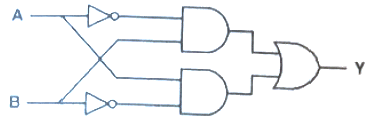
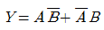
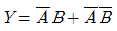
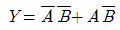
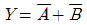
(정답률: 61%)
80. R, L, C가 서로 직렬로 연결되어 있는 회로에서 양단의 전압과 전류의 위상이 동상이 되는 조건은?
- ω=LC
- ω=L2C
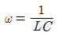
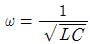
(정답률: 67%)